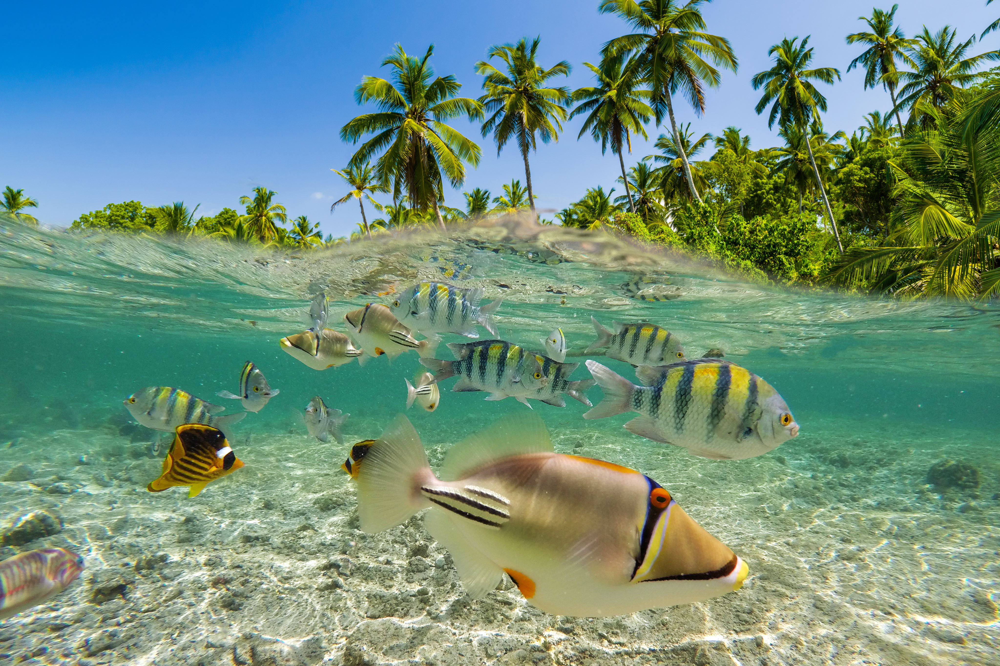
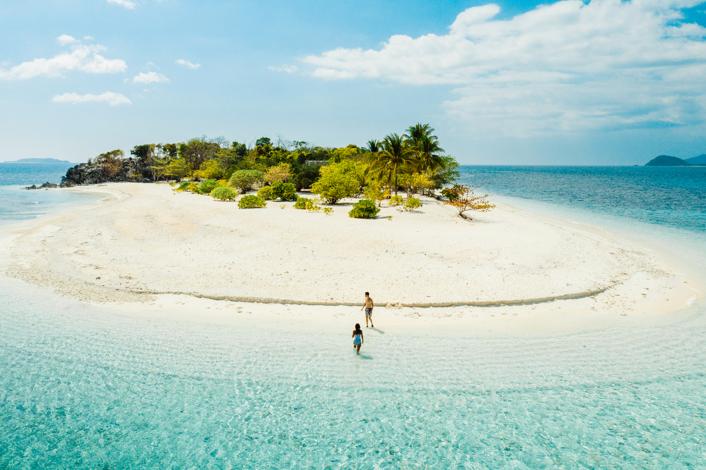
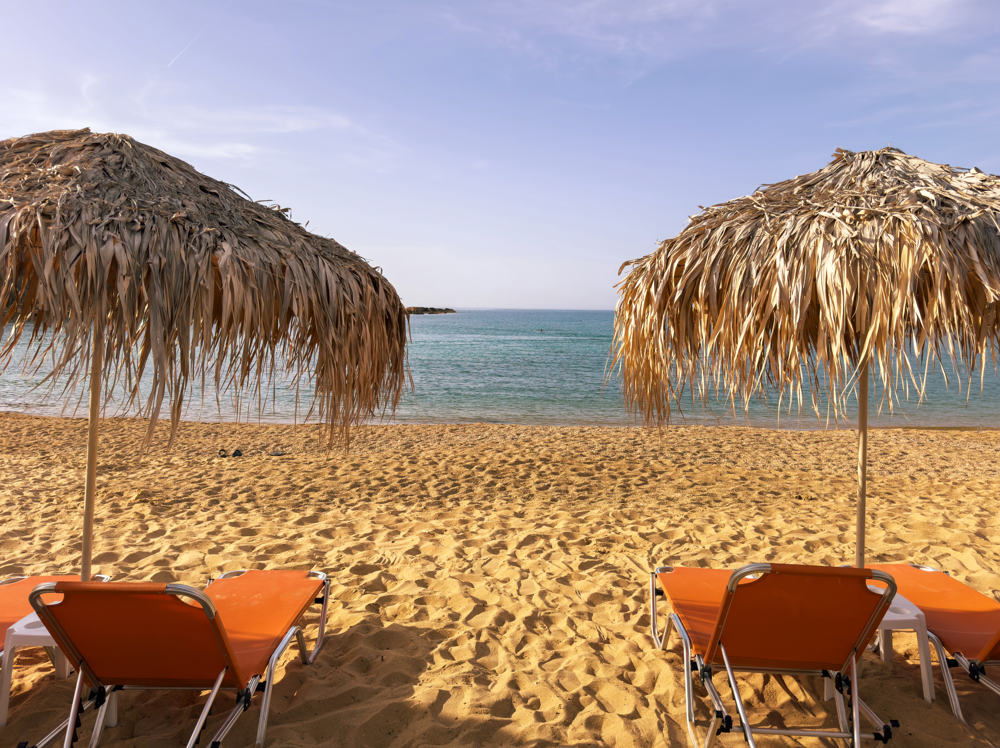
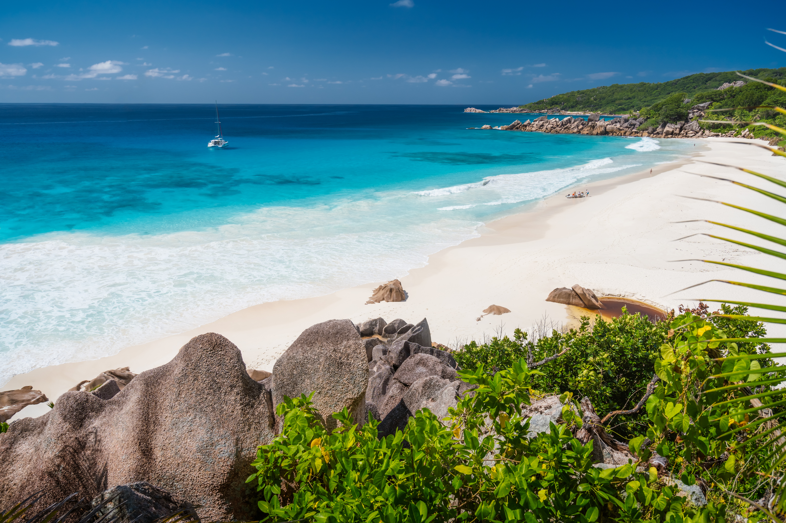
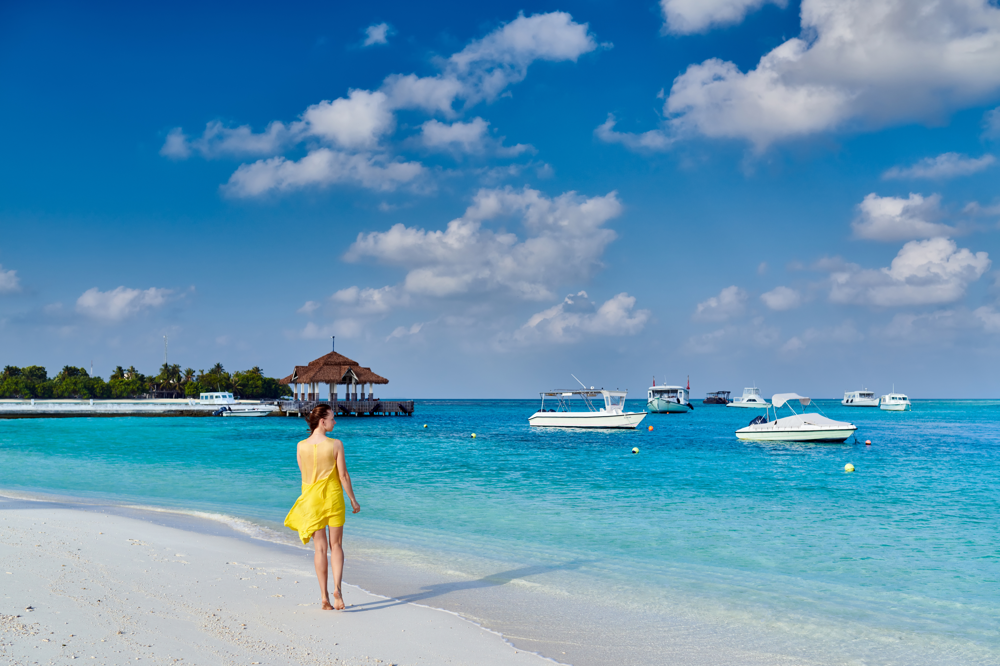

Where the Ocean Meets Your Soul
The World’s Most Breathtaking Beaches
From powder-soft white sands to dramatic coastlines kissed by turquoise waves, these beaches are more than destinations — they’re feelings.
Where the Ocean Meets Your Soul
From powder-soft white sands to dramatic coastlines kissed by turquoise waves, these beaches are more than destinations — they’re feelings.





Turquoise-blue water, fine sand, and palm trees swaying gently in the breeze—some places truly look like they belong on a postcard. But what makes a beach destination truly unforgettable? From crystal-clear waters and endless sandy shores to breathtaking landscapes and exciting activities, discover what makes the world's most beautiful beaches so special and find inspiration for your next tropical getaway.
Each of these beaches has its own unique charm. Here, you’ll discover what makes them so special:
Pro tipps
A perfect beach vacation means something different to everyone. While some prefer to relax under palm trees with a cocktail in hand, others seek adventure through diving, snorkeling, or exploring hidden coves. Yet, these five destinations share one thing in common: they offer unforgettable experiences and a unique atmosphere. It doesn’t always have to be the most famous or expensive destination; often, it is the smaller, less-visited beaches that leave the most lasting impression. Let our favorites inspire you and discover which dream beach could become your next travel destination.
Follow me for more content like this, and share the article with your friends!